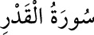

<a name=10788></a><br/>
<b>97- el-KADR SÛRESİ</b><br/>
<i><b>Kadir gecesinden söz ettiği için bu adı almıştır. Abese sûresinden sonra Mekke’de</b></i><br/>
<i><b>inmiştir, 5 âyettir. Sûrede, Kadir gecesinden, onun faziletinden, o gecede</b></i><br/>
<i><b>meleklerin yeryüzüne inişinden bahsedilir.</b></i><br/>
